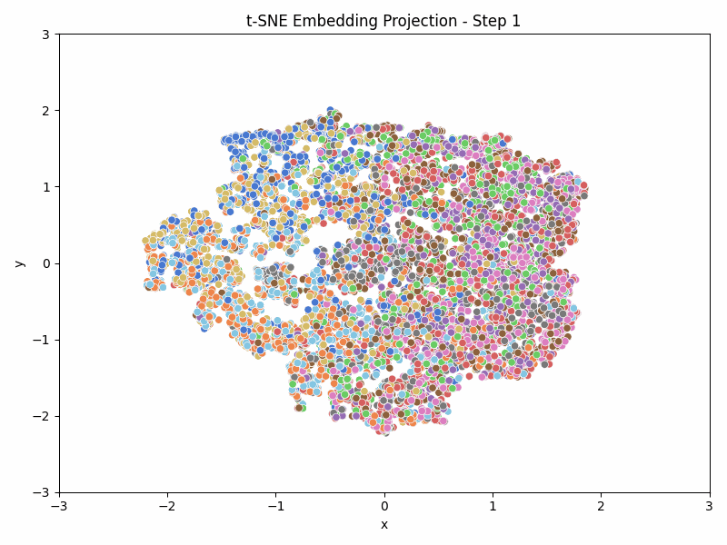

Embedding Vectors
In diesem Abschnitt wollen wir genauer untersuchen, wie Embedding Vektoren in neuronalen Netzwerken entstehen. Dazu trainieren wir das aus dem vorherigen Abschnitt entwickelte ResNet auf dem CIFAR-10 Datensatz. Gleichzeitig werden wir die Embedding Vektoren der Bilder extrahieren und analysieren.
Wir verwenden t-SNE zur Visualisierung der Embedding Vektoren. Anders als die PCA (Principal Component Analysis) ist t-SNE ein nichtlineares Verfahren, das besonders gut für die Visualisierung hochdimensionaler Daten geeignet ist.
{kind=link}
Das Ziel ist es eine Animation wie die obige zu erstellen, die die Entwicklung der Embedding Vektoren während des Trainings zeigt.
Aufgabe 1: Embedding Vektoren extrahieren
Im ersten Schritt müssen wir die Embedding Vektoren der Bilder extrahieren. Das Modell liefert in seinem forward-Pass bereits neben den Logits auch die Ausgabe der letzten Schicht vor der Klassifikation, also die Embedding-Vektoren. Diese sind in diesem Fall 128-dimensional, da das ResNet-Model eine letzte Faltungsschicht mit 128 Kanälen hat.
Öffnen Sie die Datei embeddings.py und implementieren Sie die Methode embeddings.calculate_embeddings, welche die Embedding Vektoren aus dem Modell extrahiert.
Lösung anzeigen
def calculate_embeddings(self, model):
model.eval()
embeddings = []
labels = []
bar = tqdm(self.validation_set, desc="Berechne Embeddings")
with torch.no_grad():
for inputs, l in bar:
inputs = inputs.to(DEVICE)
_, emb = model(inputs)
embeddings.append(emb.cpu())
labels.append(l.cpu())
bar.close()
model.train()
return torch.cat(embeddings, dim=0).numpy(), torch.cat(labels, dim=0).numpy()
Aufgabe 2: t-SNE Visualisierung
t-Distributed Stochastic Neighbor Embedding (t-SNE) ist ein nichtlineares Verfahren zur Dimensionsreduktion, das hauptsächlich zur Visualisierung hochdimensionaler Daten in einem niedrigdimensionalen Raum (meist 2D oder 3D) verwendet wird. Entwickelt wurde t-SNE von Laurens van der Maaten und Geoffrey Hinton. Es eignet sich besonders gut, um Muster in Daten wie Bild-Features, Text-Embeddings oder biologischen Messwerten zu entdecken.
Funktionsweise
t-SNE wandelt die Ähnlichkeiten zwischen Datenpunkten in Wahrscheinlichkeiten um und minimiert anschließend die Kullback-Leibler-Divergenz zwischen den Wahrscheinlichkeitsverteilungen im hohen und im niedrigen Dimensionsraum.
Der Algorithmus besteht im Wesentlichen aus zwei Schritten:
Wahrscheinlichkeitsverteilung im hochdimensionalen Raum: Die Ähnlichkeiten werden mit Hilfe einer gaußschen Verteilung berechnet.
Wahrscheinlichkeitsverteilung im niedrigdimensionalen Raum: Eine ähnliche Verteilung wird mit einer Student-t-Verteilung mit einem Freiheitsgrad berechnet (mit „schwerem Schwanz“), um das sogenannte „Crowding-Problem“ zu mildern.
Minimierung der Divergenz: Die Kullback-Leibler-Divergenz zwischen den beiden Verteilungen wird minimiert, um die Struktur der Daten im niedrigdimensionalen Raum zu erhalten.
Details zur Wahrscheinlichkeitsumwandlung in t-SNE
t-SNE übersetzt Ähnlichkeiten zwischen Punkten in Wahrscheinlichkeiten, um die Struktur hochdimensionaler Daten im niedrigen Raum zu erhalten. Im Folgenden eine Schritt-für-Schritt-Erklärung dieses Prozesses:
1. Ähnlichkeit im hochdimensionalen Raum
Für jeden Punkt \(x_i\) wird berechnet, wie ähnlich er zu jedem anderen Punkt \(x_j\) ist. Dies geschieht über eine gaußsche (normalverteilte) Wahrscheinlichkeitsfunktion:
Diese bedingte Wahrscheinlichkeit beschreibt, wie wahrscheinlich es ist, dass \(x_i\) den Punkt \(x_j\) als seinen Nachbarn „auswählen“ würde.
2. Symmetrisierung
Zur Konstruktion einer symmetrischen Ähnlichkeitsmatrix wird folgender Ausdruck verwendet:
Dabei ist \(N\) die Gesamtzahl der Punkte. So entsteht eine symmetrische Verteilung \(P\) über alle Punktpaare.
3. Ähnlichkeit im niedrigdimensionalen Raum
Im niedrigdimensionalen Raum (z. B. 2D) wird eine ähnliche Wahrscheinlichkeitsverteilung \(q_{ij}\) erzeugt – jedoch auf Basis einer Student-t-Verteilung mit einem Freiheitsgrad:
Die Punkte \(y_i\) und \(y_j\) repräsentieren die Projektionen von \(x_i\) und \(x_j\) im niedrigdimensionalen Raum.
4. Optimierung mittels Kullback-Leibler-Divergenz
t-SNE minimiert den Unterschied zwischen den Verteilungen \(P\) und \(Q\) mithilfe der Kullback-Leibler-Divergenz:
Eine kleine Divergenz bedeutet, dass die Struktur des hochdimensionalen Raums im niedrigdimensionalen Raum gut erhalten wurde.
Fazit
Die Wahrscheinlichkeiten dienen als Maß für „Nachbarschaft“ und bilden die Grundlage dafür, dass t-SNE lokal ähnliche Strukturen korrekt in 2D oder 3D darstellt.
Da t-SNE die Kullback-Leibler-Divergenz zwischen den Wahrscheinlichkeitsverteilungen \(P\) und \(Q\) minimiert, handelt es sich im Kern um ein Gradientenabstiegsverfahren. Die Positionen der Punkte im niedrigdimensionalen Raum werden iterativ so angepasst, dass die Divergenz möglichst klein wird.
Dies hat zwei wichtige Konsequenzen:
Initialisierungsabhängigkeit: Da der Gradientenabstieg ein lokales Optimierungsverfahren ist, kann das Ergebnis stark von der zufälligen Initialisierung abhängen. Unterschiedliche Läufe mit verschiedenen Seeds können zu unterschiedlichen Visualisierungen führen.
Konsistenz über Zeitreihen: Möchte man t-SNE für mehrere aufeinanderfolgende Zeitpunkte (z. B. bei sich entwickelnden Daten) einsetzen und dabei visuelle Konsistenz bewahren, empfiehlt es sich, die t-SNE-Positionen des vorherigen Zeitschritts als Initialisierung für den nächsten Zeitschritt zu verwenden. Dadurch wird verhindert, dass sich Cluster durch reine Neuberechnung verschieben oder auseinanderfallen.
Um die Vergleichbarkeit der t-SNE-Visualisierungen über verschiedene Trainingsschritte zusätzlich zu verbessern normalisieren wir die 2D-Embeddings zusätzlich, sodass sie einen Mittelwert von 0 und eine Standardabweichung von 1 haben.
Implementieren Sie nun die Methode embeddings.calculate_tsne, die die t-SNE-Visualisierung der Embedding Vektoren erstellt.
Lösung anzeigen
def calculate_tsne(self, embeddings, previous_embeddings_2d=None):
if previous_embeddings_2d is not None:
tsne_model = TSNE(n_components=2, init=previous_embeddings_2d)
else:
tsne_model = TSNE(n_components=2, init="pca")
embeddings_2d = tsne_model.fit_transform(embeddings)
embeddings_2d = np.array(embeddings_2d, dtype=np.float32)
m = np.mean(embeddings_2d, axis=0, keepdims=True) # Normalize to zero mean
s = np.std(embeddings_2d, axis=0, keepdims=True) # Normalize to unit variance
embeddings_2d = (embeddings_2d - m) / s # Normalize the embeddings
return embeddings_2d
Aufgabe 3: Die alte und neue Punktwolke gegeneinander registrieren
Selbst wenn die t-SNE-Projektion für einen neuen Zeitschritt mit der niedrigdimensionalen Einbettung des vorherigen Zeitschritts initialisiert wird, kann es während der Optimierung trotzdem zu signifikanten Transformationen kommen – insbesondere zu Spiegelungen oder Rotationen der gesamten Punktwolke (z. B. einer Drehung um 180°).
Solche Transformationen verändern die relative Struktur der Daten nicht, können aber bei der Darstellung über mehrere Zeitpunkte hinweg zu visuell instabilen oder springenden Animationen führen.
Um diese Instabilität zu beheben, empfiehlt es sich, im Anschluss an die t-SNE-Projektion eine optimale Rotationsmatrix zu berechnen, die die neue Punktwolke möglichst gut an die vorherige „anpasst“. Dieser Schritt wird häufig mit einem Verfahren wie der Prokrustes-Analyse realisiert.
Die Rotation hat dabei folgende Vorteile:
Sie registriert die Punktwolken über die Zeit, also bringt sie in bestmögliche Übereinstimmung.
Sie reduziert ungewollte globale Effekte (z. B. „Kippen“, „Drehen“ oder „Flackern“).
Sie sorgt für eine glattere, interpretierbarere Darstellung in dynamischen Visualisierungen.
Insbesondere bei Anwendungen mit zeitabhängigen Daten oder Animationen (z. B. Entwicklung von Clustern über mehrere Iterationen) ist dieser zusätzliche Registrierungsschritt entscheidend für die visuelle Kohärenz.
Wir verwenden die Implementierung der Prokrustes-Analyse aus scipy, insbesondere die Funktion scipy.linalg.orthogonal_procrustes.
Implementieren Sie nun die Methode embeddings.register_embeddings_2d, die die alte und neue Punktwolke gegeneinander registriert.
Lösung anzeigen
def register_embeddings_2d(self, embeddings_2d, previous_embeddings_2d):
if previous_embeddings_2d is not None:
R, _ = orthogonal_procrustes(embeddings_2d, previous_embeddings_2d)
embeddings_2d = embeddings_2d @ R
return embeddings_2d
Aufgabe 4: Die Embeddings visualisieren
Nachdem wir die Embedding Vektoren extrahiert und die t-SNE-Visualisierung erstellt haben, können wir die Embeddings visualisieren. Dazu verwenden wir seaborn.scatterplot und Matplotlib, um die 2D-Embeddings zu plotten und die Labels der Bilder anzuzeigen.
Implementieren Sie nun die Methode embeddings.visualize_embeddings, die die Embeddings visualisiert.
Lösung anzeigen
def visualize_embeddings(self, embeddings_2d, labels, step, axs):
df = pd.DataFrame(
{"x": embeddings_2d[:, 0], "y": embeddings_2d[:, 1], "label": labels}
)
sns.scatterplot(data=df, x="x", y="y", hue="label", palette="muted", ax=axs)
axs.set_xlim(-3.0, 3.0)
axs.set_ylim(-3.0, 3.0)
axs.get_legend().remove()
axs.set_title(f"t-SNE Embedding Projection - Step {step}")
Starten Sie nun das Training des ResNet-Modells und beobachten Sie die Entwicklung der Embedding Vektoren, z.B. im TensorBoard-Interface oder im Unterordner embeddings/imagess des Projekts.